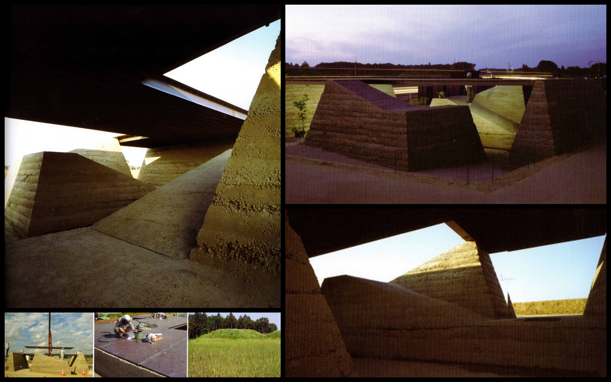
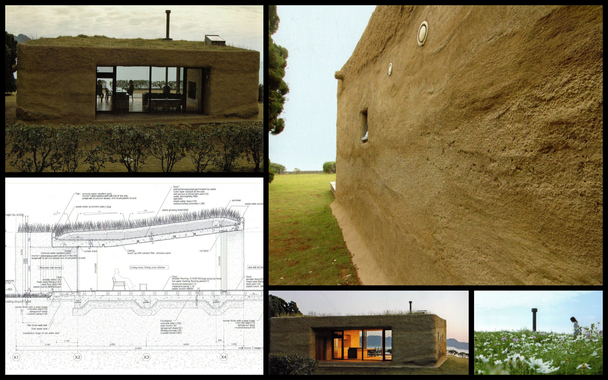
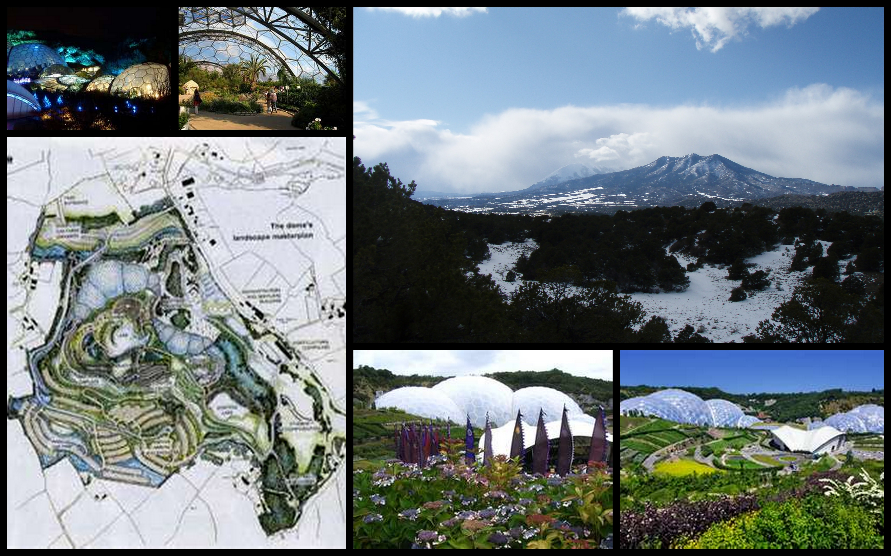

intentional community, community development, permaculture design and planning, natural building, project management, construction management
silent fire ranch
These images are not of our work. They are by others. They were inspiration for the land planning that we prepared for the community. We are searching for the images now and will update these with our own.


